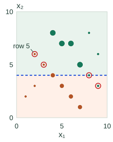
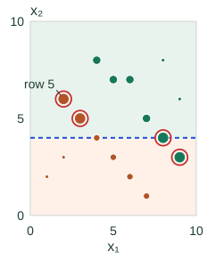

AdaBoost: Weights, Votes & the Proof
AdaBoost changes the importance of training examples and combines the resulting classifiers with weighted votes. This chapter uses binary discrete AdaBoost: every label and learner prediction is −1 or +1.
The two kinds of weight do different jobs. Example weights tell the next learner which mistakes cost the most. Learner votes tell the final ensemble which classifiers have more influence. Follow five rows through two rounds to keep those roles separate.
Separate example weights from learner votes
At round $t$, let $D_t(i)$ be the weight of training row $i$; these weights sum to 1. Fit a classifier $h_t$ using them. Its weighted error $\epsilon_t$ is the sum of weights on rows it gets wrong.
The new classifier’s vote strength is $\alpha_t$. For an error strictly between 0 and 0.5, use:
A lower weighted error earns a larger positive vote. Multiply each missed row’s weight by $e^{\alpha_t}$ and each correct row’s by $e^{-\alpha_t}$, then normalize again. The next learner sees those revised priorities.
Keep the earlier fitted learners fixed. Only the next learner is trained with the new example weights. A shallow decision tree is one possible base learner; the update does not require a particular kind of classifier.
Where the first learner comes from
Use input values $x=[1,2,3,4,5]$ and labels $y=[+1,-1,-1,+1,+1]$. Initially all five rows weigh 0.2. Our weak learner searches the four midpoint thresholds. Each leaf predicts its weighted-majority label, choosing +1 if class weights tie. We also allow constant +1 and −1 classifiers; on equal total error, prefer a constant, then the smaller threshold.
| Candidate | Predictions on rows 1–5 | Weighted error |
|---|---|---|
| Constant +1 | +, +, +, +, + | 0.4 |
| Constant −1 | −, −, −, −, − | 0.6 |
| Split 1.5 | +, +, +, +, + | 0.4 |
| Split 2.5 | +, +, +, +, + | 0.4 |
| Split 3.5 | −, −, −, +, + | 0.2 |
| Split 4.5 | +, +, +, +, + | 0.4 |
The winner splits at 3.5 and misses only row 1. Unlike a tree that minimizes weighted Gini, this teaching stump directly minimizes weighted classification error. A production base learner may use a different split criterion; AdaBoost still computes its weighted classification error after fitting.
Work through two rounds
Start with five rows weighted 0.2 each. The fitted first learner misses only row 1. Its error is 0.2, giving $\alpha_1=\ln2\approx0.693$. Multiply the missed row by 2 and the others by 0.5. The unnormalized weights total 0.8; divide by 0.8.
Row 1 now has weight $0.2\times2/0.8=0.5$; each other row has $0.2\times0.5/0.8=0.125$. Missing row 1 alone now costs as much as missing the other four rows together. This gives the next learner a reason to choose a different rule.
On the updated weights, the best candidate error is 0.25. The constant +1 rule and the threshold candidates attain that value; our tie rule selects the constant +1 learner, which misses rows 2 and 3. They each weigh 0.125, so its weighted error is 0.25 even though it misses two of five rows. Its vote is $\alpha_2=\tfrac12\ln3\approx0.549$.
| Row | Initial weight | After round 1 | After round 2 |
|---|---|---|---|
| 1 | 0.2 | 0.5 | 1/3 |
| 2 | 0.2 | 0.125 | 1/4 |
| 3 | 0.2 | 0.125 | 1/4 |
| 4 | 0.2 | 0.125 | 1/12 |
| 5 | 0.2 | 0.125 | 1/12 |
Round 2 multiplies its missed rows by $\sqrt3$ and correct rows by $1/\sqrt3$, then renormalizes. Every column sums to 1. These are training weights, not relabelings or new observations.

For example, the second normalization constant is $0.25\sqrt3+0.75/\sqrt3=\sqrt3/2$. Row 2 becomes $(\tfrac18\sqrt3)/(\sqrt3/2)=1/4$, while row 1 becomes $(\tfrac12/\sqrt3)/(\sqrt3/2)=1/3$. The newest learner’s two missed rows now carry half the total weight between them.
Check your understanding: could round 2 simply reuse learner 1?
Learner 1 still misses only row 1, which now carries weight 0.5. Its new weighted error would therefore be 0.5, giving vote $\tfrac12\ln(0.5/0.5)=0$. Repeating it would make no progress. Its original vote remains 0.693; earlier votes are not recomputed using later weights.
A correct new prediction need not fix the ensemble immediately
At prediction time, add each learner’s vote times its ±1 output, then use the sign of the total. Example weights $D_t(i)$ are training quantities; they are not needed to predict a new row.
Suppose row 1’s true label is +1. Learner 1 predicts −1 and learner 2 predicts +1, as required by our error pattern. The combined score is $0.693(-1)+0.549(+1)=-0.144$, so the ensemble still predicts −1. The first learner has the larger vote.
Yet row 1’s weight fell from 0.5 to 1/3. There is no contradiction: the latest learner got it right, so this round reduced its relative weight and moved its score toward the correct side. The update is based on the new learner’s prediction. It does not promise that every reweighted row changes its ensemble label immediately.
Choose a fixed tie rule for a score of zero. The stump animation below runs five actual rounds on a separate two-feature dataset. Open it to compare each stump’s mistakes with the combined prediction; then continue to the derivation.
Explore five fitted stumps on a two-feature dataset
▶ AdaBoost, One Round at a Time
Each step actually fits a stump on 16 rows with two numeric features. Compare weights entering the round with weights after its update. Circle area is proportional to weight, using the same scale in both plots.
Round 3 of 5: the stump misses 4 rows, while the combined classifier gets all 16 right.
Stump: x₂ > 4 → A; x₂ ≤ 4 → B.
Entering weights
Updated weights
Round 3: entering weights

Round 3: updated weights

The blue line is this round’s stump; the tinted regions show its A and B predictions. Points on the line follow the ≤ branch. Red rings identify stump mistakes, even when the combined classifier is correct. Row 5 is worked through below.
- Stump weighted error ε
- 0.100
- Stump missed rows
- 4 / 16 (25%)
- Stump vote α
- 1.099
- Combined training accuracy
- 100.0%
Combined accuracy after each round
- t175%
- t275%
- t3100%
- t4—
- t5—
Inspect all 16 row weights and predictions
Weights are normalized separately before and after the update; each set sums to 1. Displayed values are rounded to four decimal places. “Stump” is the current learner; “combined” includes all learners so far.
Row 1 · (1, 2) · B / −1
Entering: 0.0250
Updated: 0.0139
Stump: correct · combined: correct
Row 2 · (2, 3) · B / −1
Entering: 0.0250
Updated: 0.0139
Stump: correct · combined: correct
Row 3 · (4, 4) · B / −1
Entering: 0.0750
Updated: 0.0417
Stump: correct · combined: correct
Row 4 · (6, 2) · B / −1
Entering: 0.0750
Updated: 0.0417
Stump: correct · combined: correct
Row 5 · (2, 6) · B / −1
Entering: 0.0250
Updated: 0.1250
Stump: wrong · combined: correct
Row 6 · (3, 5) · B / −1
Entering: 0.0250
Updated: 0.1250
Stump: wrong · combined: correct
Row 7 · (5, 3) · B / −1
Entering: 0.0750
Updated: 0.0417
Stump: correct · combined: correct
Row 8 · (7, 1) · B / −1
Entering: 0.0750
Updated: 0.0417
Stump: correct · combined: correct
Row 9 · (8, 8) · A / +1
Entering: 0.0250
Updated: 0.0139
Stump: correct · combined: correct
Row 10 · (9, 6) · A / +1
Entering: 0.0250
Updated: 0.0139
Stump: correct · combined: correct
Row 11 · (6, 7) · A / +1
Entering: 0.1250
Updated: 0.0694
Stump: correct · combined: correct
Row 12 · (4, 8) · A / +1
Entering: 0.1250
Updated: 0.0694
Stump: correct · combined: correct
Row 13 · (8, 4) · A / +1
Entering: 0.0250
Updated: 0.1250
Stump: wrong · combined: correct
Row 14 · (5, 7) · A / +1
Entering: 0.1250
Updated: 0.0694
Stump: correct · combined: correct
Row 15 · (7, 5) · A / +1
Entering: 0.1250
Updated: 0.0694
Stump: correct · combined: correct
Row 16 · (9, 3) · A / +1
Entering: 0.0250
Updated: 0.1250
Stump: wrong · combined: correct
The updated weights become the entering weights of the next round. For example, round 1 starts with 1/16 per row and misses four rows: ε = 4/16 = 0.25. After normalization, each missed row has weight 1/8, while each of the other twelve has weight 1/24. The two groups now carry half the total weight each. The labels and coordinates have not changed.
The animation computes five rounds on this separate two-feature dataset. Its final updated weights show what a sixth round would receive; this demonstration stops after five. Training accuracy need not improve on every individual round.
Inspect the complete five-round run
| Round | Rule predicting A; otherwise B | Weighted error ε | Vote α | Combined accuracy |
|---|---|---|---|---|
| 1 | x₁ > 3.5 | 0.250 | 0.549 | 75% |
| 2 | x₁ > 7 | 0.167 | 0.805 | 75% |
| 3 | x₂ > 4 | 0.100 | 1.099 | 100% |
| 4 | x₁ > 3.5 | 0.167 | 0.805 | 100% |
| 5 | x₁ > 7 | 0.167 | 0.805 | 100% |
A stump’s error is not the ensemble’s error
At round 3, the stump misses rows 5, 6, 13, and 16. Each enters with weight 0.025, so its weighted error is 0.10, even though it misses 4 of 16 rows: an unweighted error of 25%. Meanwhile, the combined classifier has zero training errors. These quantities answer different questions.
Follow row 5, at (2, 6), whose true class is B / −1. The third stump predicts A because x₂ = 6 exceeds 4. Its weight therefore rises from 0.025 to 0.125. But the first two stumps both predicted B for this row, and their votes still win:
The combined score is negative, so the ensemble correctly predicts B. Reweighting responds to the new stump’s mistake even though the accumulated classifier gets this row right. The update can continue improving margins after training accuracy reaches 100%; validation performance determines whether more rounds help on new data.
Why the vote is a log ratio
The current combined score is $F(x)$. Multiplying it by the true label $y_i$ gives a positive number for a correct prediction and a negative one for a wrong prediction. Exponential loss assigns row $i$ the cost $e^{-y_iF(x_i)}$.
Derive the vote and weight update
Let $L(F)$ be the sum of those row costs. The current normalized weights are $D(i)=e^{-y_iF(x_i)}/L(F)$. Hold a new classifier $h$ fixed and add a vote $\alpha h$ to $F$. Correct and incorrect rows have total old weight $1-\epsilon$ and $\epsilon$, respectively. Thus
Differentiate with respect to the vote strength, set the derivative to zero, and solve:
The second derivative is positive for $0<\epsilon<1$, so this is the minimum. For each row, adding the vote multiplies its old loss by $e^{-\alpha y_i h(x_i)}$. Renormalizing these losses gives exactly the example-weight update. This derivation describes the unshrunk binary update; a learning-rate multiplier changes the exact line minimization.
Why zero classification error need not end learning
The signed margin is $y_iF(x_i)$. Once it is positive, the label is correct, but increasing it still reduces exponential loss. This explains why more rounds can change the model after it has classified every training row correctly.
What does the training-error guarantee assume?
Let $Z_t=2\sqrt{\epsilon_t(1-\epsilon_t)}$ be the optimized loss ratio for round $t$, and let $\gamma_t=1/2-\epsilon_t$ be its advantage over chance. Starting with equal weights, the fraction of training mistakes, counting ties as errors, obeys
The first inequality holds because a wrong or tied prediction has exponential loss at least 1. The second uses $Z_t=\sqrt{1-4\gamma_t^2}$ and $\ln(1-u)\leq-u$. A fixed lower bound $\gamma_t\geq\gamma>0$ gives exponential decay in the number of rounds. Merely being below 50% by an ever-shrinking amount does not give that uniform rate. This bounds training error, not test error.
Carry the right state between rounds
D = [1/n] * n
learners = []
for t in range(max_rounds):
h = fit_weighted_classifier(X, y, D)
error = sum(D[i] for i in rows if h(X[i]) != y[i])
if error == 0: handle_perfect_learner_and_stop(h)
if error >= 0.5: stop_or_retry_with_another_learner()
alpha = 0.5 * log((1 - error) / error)
D = normalize(D[i] * exp(-alpha * y[i] * h(X[i])) for i in rows)
learners.append((alpha, h))
# Prediction needs the fitted learners, not the training-row weights.
score(x) = sum(alpha * h(x) for alpha, h in learners)The two edge-case handlers above must end or skip the iteration; they are not ordinary functions that return and let the invalid logarithm run. For a perfect weak learner, one finite policy is to give it a vote greater than the sum of previous absolute votes and stop, making its sign dominate the ensemble. Another explicit policy is to return that perfect learner. State the policy rather than silently evaluating log(0).
For long runs, keep log weights and normalize by subtracting a log-sum-exp to reduce numerical underflow. If you introduce vote shrinkage, apply it consistently in both the score and the example-weight update, and remember that the exact unshrunk line-search proof no longer describes that smaller step.
The runnable companion fits these candidate stumps and verifies both weight columns. Predict the winning second learner before running it.
Handle the cases the formula excludes
- Perfect learner: error zero would require an infinite vote. Handle it explicitly and stop.
- Error 0.5: the vote is zero, so this round makes no progress.
- Error above 0.5: reject or refit the learner; flipping every binary prediction is another option.
- Noisy labels: repeated mistakes can accumulate excessive weight. Validate the number of rounds and learner capacity.
A combined score is not automatically a calibrated probability. For corrections under other losses, continue to gradient boosting.
Sources and next steps
- Schapire: The Boosting Approach to Machine Learning — Binary AdaBoost, exponential loss, and training-error bounds.